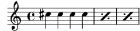
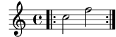

| [ << New for musical notation ] | [Top][Contents] | [ New for specialist notation >> ] |
| [ < Expressive mark improvements ] | [ Up: New for musical notation ] | [ Editorial annotation improvements > ] |
Repeat improvements
- The new music functions
\%and\*serve as abbreviations for\repeat percentand\repeat unfolded.\%3 \*4 cis''4

-
\repeat voltaalternative endings no longer create invisible bar lines. This may affect line breaking, horizontal spacing, andVoltaBracketlength where an alternative begins or ends without a bar line. In the case of an undesired change, try adding\bar ""or another command that creates aBarLineat that point. - Using the new
printInitialRepeatBarproperty, it is possible to print a start repeat bar line, automatically, at the beginning of the piece.
- The volta number position relative to the the volta bracket can
now be adjusted with the
volta-number-offsetproperty ofVoltaBracket.
| [ << New for musical notation ] | [Top][Contents] | [ New for specialist notation >> ] |
| [ < Expressive mark improvements ] | [ Up: New for musical notation ] | [ Editorial annotation improvements > ] |